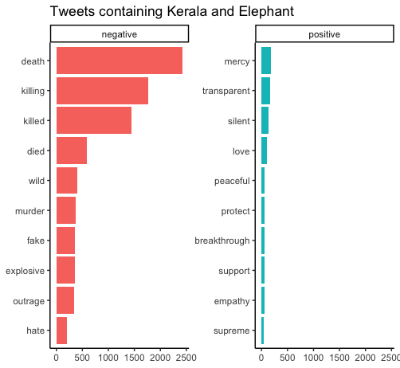
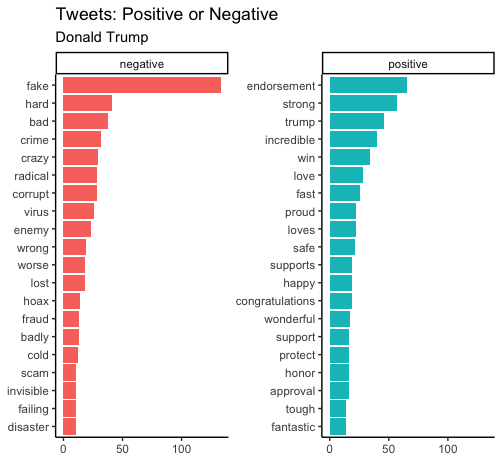
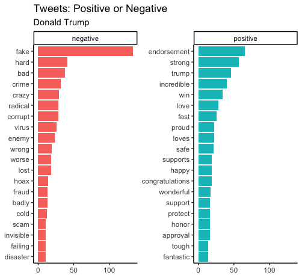
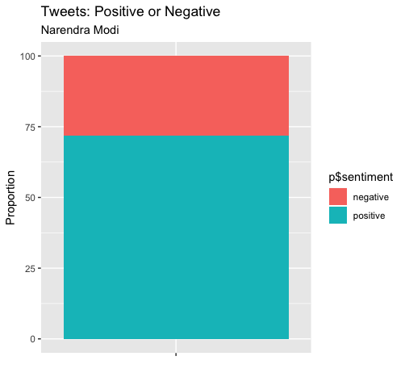
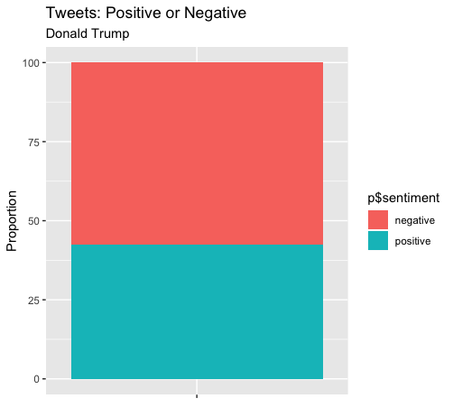

Two days back I got curious about the Twitter API. I worked with a few APIs (using R) in the past but had never chanced upon using Twitter data. Additionally, Twitter provided a rich source of “what people are talking about”. I searched and found a very easy to use package for R called rTweet. This package’s simplicity and easiness blew my mind.
I went deep into it and found several useful functions like search_tweets(), stream_tweets() and get_timeline(). Of course, there are many more functions, have a look at their reference list.
But, why just stop there? tidytext allows very easy to use unigram sentiment analysis. I thought of finding the “positive” and “negative” words used on Twitter.
To start with, I tracked Kerala’s elephant murder: an incident in Kerala where an elephant died allegedly due to crackers blasting in its mouth. This incident had grabbed national and international attention bringing organisations like PETA to the forefront.
I first searched for last 10,000 tweets on Twitter, did some cleaning and finally analysed for sentiments.
R Codes
library(rtweet) # Twitter API medium
library(ggplot2) # for plotting
library(dplyr) # for piping operator and handling tibbles
library(tidytext) # text mining libraries
library(textdata)
rt = search_tweets("Kerala+Elephant,lang:en",n = 10000, include_rts = F)
#clear all links
rt$updated_text = gsub("https.*","",rt$text)
rt$updated_text = gsub("http.*","",rt$updated_text)
#convert all texts to lowercase and remove punctuations
rt2 <- rt %>%
dplyr::select(updated_text) %>%
unnest_tokens(word, updated_text)
#removing stop words
data("stop_words")
#nrow(rt2)
rt2 = anti_join(rt2,stop_words)
#nrow(rt2)
# now, I'll attach each word to its sentiment using the dictionary "bing"
rt3 = rt2 %>%
inner_join(get_sentiments("bing")) %>%
count(word, sentiment, sort = T) %>%
ungroup()
{{< panelset class=“greetings” >}}
{{< panel name=“Viz! :wave:” >}}

{{< /panel >}}
{{< panel name=“Code :computer:” >}}
# plot the negatives and positives
rt3 %>%
group_by(sentiment) %>%
top_n(20) %>%
ungroup() %>%
mutate(word = reorder(word,n)) %>%
ggplot(aes(word,n,fill = sentiment)) +
geom_col(show.legend = F) +
facet_wrap(~sentiment, scales = "free_y") +
labs(title = "Tweets containing Kerala and Elephant", y = NULL, x = NULL) +
coord_flip() +
theme_classic()
{{< /panel >}}
{{< /panelset >}}
Essentially, hardly anyone asked why the person did what they did. If it was even purposeful. Everyone just made a smiley face. A sad smiley face. :disappointed:
Why Stop There?
I thought of analysing the tweets by two world leaders: Narendra Modi (our PM) and Donald Trump (US President).
I only needed to get two different sets of tweets and the rest of code remained the same.
rt1 = get_timeline("realDonaldTrump", n = 10000, include_rts = F)
rt2 = get_timeline("narendramodi", n = 10000, include_rts = F)
{{< panelset class=“greetings” >}}
{{< panel name=“Narendra Modi :shell:” >}}
 {{< /panel >}}
{{< panel name=“Donald Trump :statue_of_liberty:” >}}

{{< /panel >}}
{{< /panelset >}}
{{< /panel >}}
{{< panel name=“Donald Trump :statue_of_liberty:” >}}

{{< /panel >}}
{{< /panelset >}}
Clearly, Modi uses many more “positive” words than Trump. Many of Modi’s negative words are also probably used in positive and hopeful sentences: poor, needy, etc. Trump’s characteristic with his fake (news). They both are using words associated with pandemic: virus, crisis, panic, attack, etc.
Here’s a proportion comparison of the overall sentiment.
{{< panelset class=“greetings” >}}
{{< panel name=“Narendra Modi :shell:” >}}

{{< /panel >}}
{{< panel name=“Donald Trump :statue_of_liberty:” >}}

{{< /panel >}}
{{< /panelset >}}
There’s a marked difference between how the two leaders - Narendra Modi and Donald Trump - tweet. Around 75% positive for Modi; 40% for Trump. Of course, I could go on comparing more but I exceeded the Twitter request and have to wait for another 15 minutes. Plus, my aim of basic understanding as to how to use API and unigram sentiment analysis was achieved.
Have a great day!